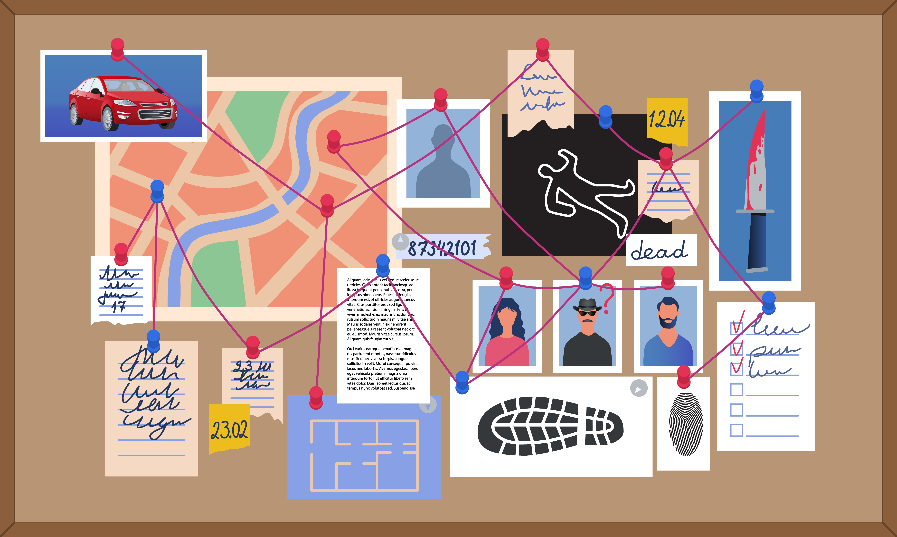

Finding a potential correlation between gun control and the number of murders
Skills: R, Data cleaning, Data preparation, Data import, Visualization in R, Statistics
Tools: ggplot2, readr, tidyr, excel, joints, filter, grouping, log scaling


Description: Finding a potential correlation between morning weight and hours of sleep/recovery level
Skills: R, Data cleaning, Data preparation, Data import, Visualization in R, Statistics
Tolls: ggplot2, readr, tidyr, excel, joints, filter, grouping
Description: Creating a dashboard with analytics and summary for the bike store.
Skills: Excel, Visualization, Data cleaning, Categorizing Data
Tolls: Pivot table, graphs, drop-down selection, advanced formulas (VLOOKUP, Index, SUMIFS, etc)

Description: Analysis of Covid-19 data from Excel in SQL
Skills: SQL, Importing data, Data cleaning
Tools: importing data, Creating views, Joining data, Grouping, Filtering
Description: Analysis of the company’s employees based on their degree, salary, and location.
Skills: SQL, Importing data, Summarizing data, Creating views, Joining data
Tolls: Joining data, importing data, Grouping, Filtering
Description: The analysis of Human Resources data. I used a relatively large dataset in terms of columns or variables looked at some of the important variables which are responsible for attrition and explored them with the help of the visualization.
Skills: Tableau, Creating dashboards, Tableau analysis